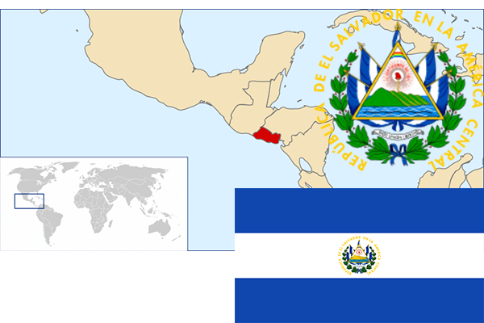

To`liq nomi: El Salvador Respublikasi
Region: Markaziy Amerikaning g`arbiy qismi
Qonunchilik shakli: Respublika
Mustaqillik kuni : 15 sentabr 1821 yil (Ispaniyadan)
Poytaxt: San Salvador
Maydoni: 21 040 km² (dunyoda 148 -o`rinda )
Chegaradosh davlatlari:Gvatemala, Gonduras
Aholisi: 6 460 000 (dunyoda 97 -o`rinda, 2015 -yil roʻyxat)
Aholi zichligi: 307,0 /km²
Aholining o`rtacha yoshi: 71,9 yil ( 75,6 ayollar, 68,2 erkaklar)
Rasmiy tili: Ispan tili
Dini: 75% katolik, 20% protestant
Pul birligi: Salvodor koloni
Telefon prefiksi: +503
Internet domen: .sv
Xalqaro tashkilotlarga a`zoligi: BMT (1945– yildan)
Dengiz va okeanlarga chiqishi: Tinch okeani
YIM: Butun: $ 29,41 mlrd, Jon boshiga: $ 4600 (2015 - yil roʻyxati)
Yirik shaharlari: San Salvador